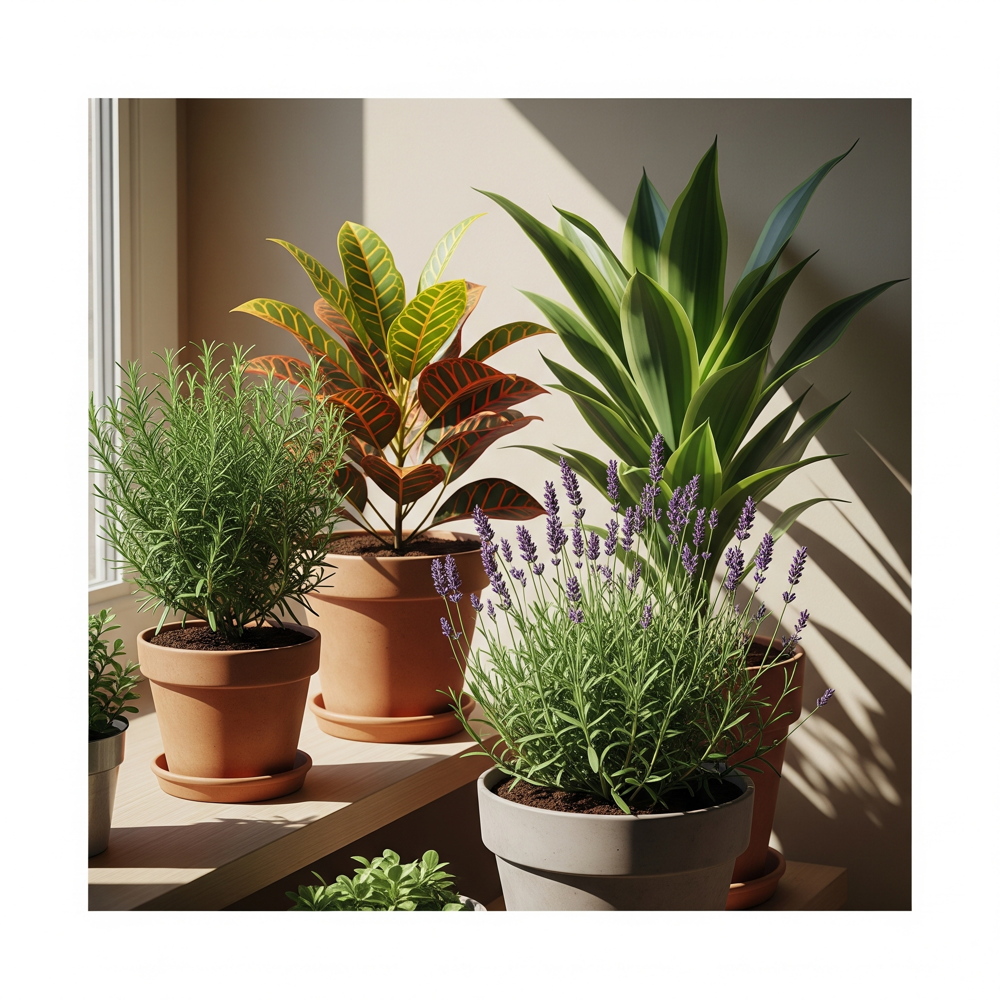

Plantas Que Precisam de Sol Direto

Se você assistiu ao nosso vídeo com aquelas plantas radiantes sob o sol, provavelmente ficou com vontade de saber mais sobre como cultivar espécies que realmente amam luz solar direta. Este post é seu guia completo para entender, escolher e cuidar dessas maravilhas da natureza — com segurança e beleza no seu lar.
🌿 Espécies em Destaque no Vídeo
- Espada-de-São-Jorge (Dracaena trifasciata): Tóxica para gatos, muito resistente e perfeita para sol pleno.
- Alecrim (Salvia rosmarinus): Segura para gatos, ideal para varandas ensolaradas e canteiros aromáticos.
- Croton (Codiaeum variegatum): Tóxico, mas incrivelmente ornamental. Requer bastante luz para manter as cores vibrantes.
- Lavanda (Lavandula spp.): Levemente tóxica, mas muito usada por seu aroma e beleza em ambientes secos e iluminados.
🔆 O Que Significa “Sol Direto”?
É quando a planta recebe 6 horas ou mais de luz solar direta por dia, sem filtros como cortinas ou vidros escuros. Isso é essencial para algumas espécies florescerem, se desenvolverem e manterem cores intensas.
Você pode medir com um aplicativo de luxímetro ou observar a sombra projetada — quanto mais definida, mais direta é a luz.
🐱 Gatos e Sol: É Seguro?
Sim, desde que você selecione espécies não tóxicas e posicione os vasos com inteligência. Alecrim e tomilho são seguros. Já o Croton e a Espada-de-São-Jorge devem ficar longe do alcance dos felinos.
🏡 Como Criar um Espaço de Sol Ideal
- Use vasos de barro ou cimento, que aquecem menos sob sol intenso.
- Evite pratos com água sob o vaso, que podem superaquecer a raiz.
- Posicione em janelas voltadas para o norte (no hemisfério sul).
- Use espelhos ou superfícies claras para ampliar a luminosidade.
💧 Rega e Nutrição no Sol
No calor, a evaporação é maior. Faça o teste do dedo: se os 2 cm de cima estiverem secos, é hora de regar. Algumas espécies, como alecrim, preferem solo quase seco. Evite exageros!
Adube com equilíbrio — o sol acelera o metabolismo da planta, mas também pode queimar folhas se houver excesso de sais.
🧪 Sinais de Luz em Excesso
- Folhas amareladas ou com manchas secas: pode ser queimadura solar.
- Crescimento atrofiado: o calor pode estar impedindo o enraizamento.
- Solo muito compacto: atenção à drenagem e ao tipo de substrato.
📦 Produtos Recomendados
- Luxímetro digital para medir luz natural
- Vaso de barro com drenagem eficiente
- Substrato leve e drenante para sol pleno